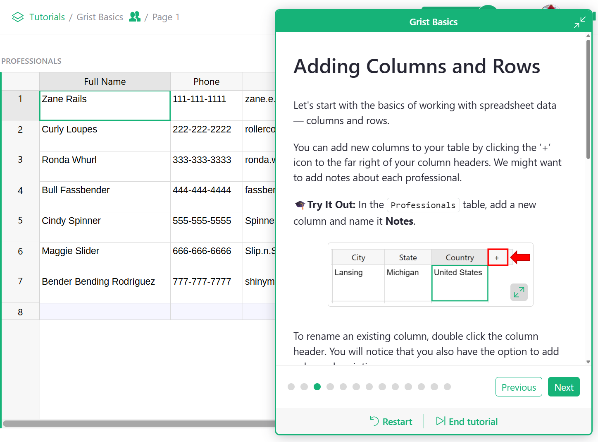
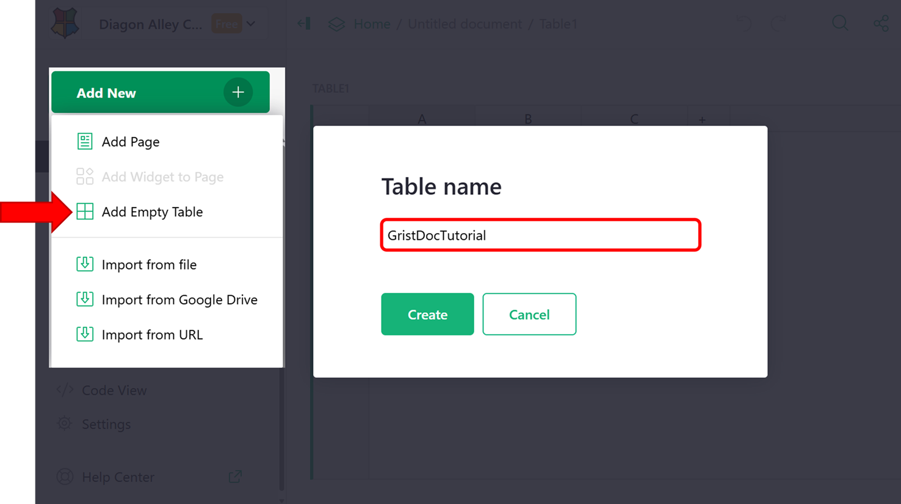
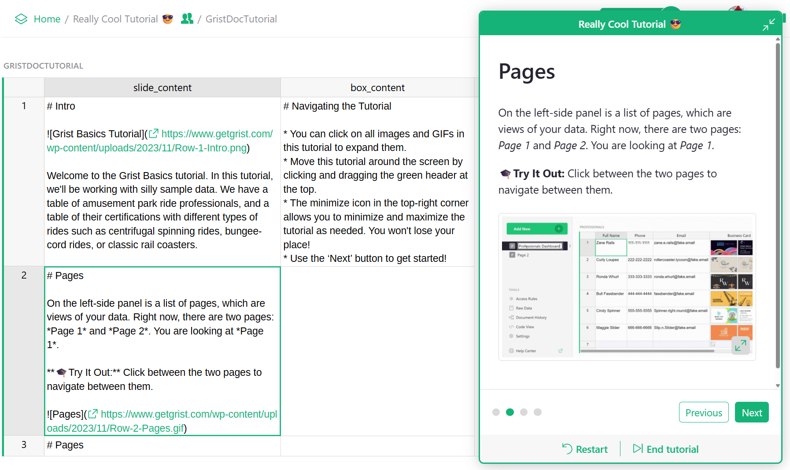
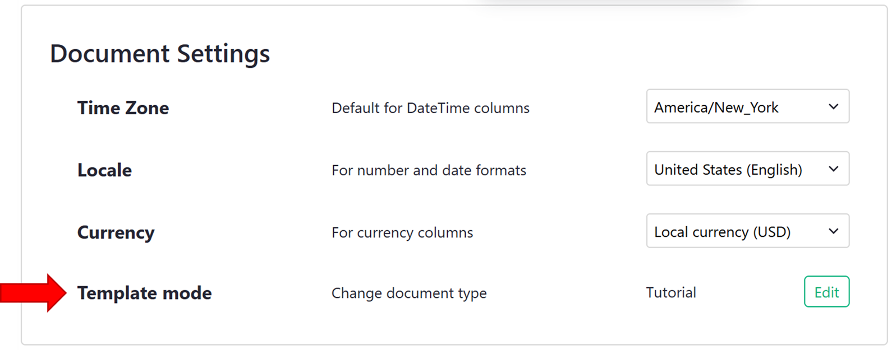
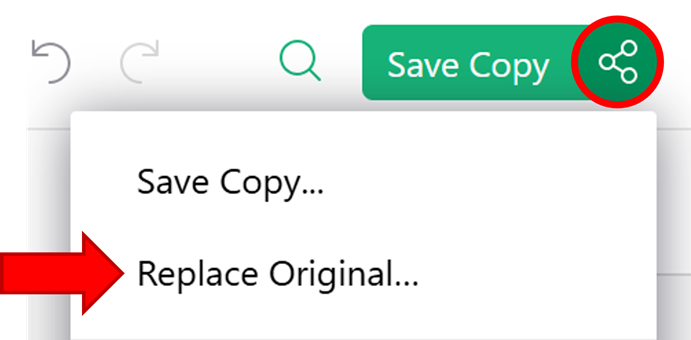
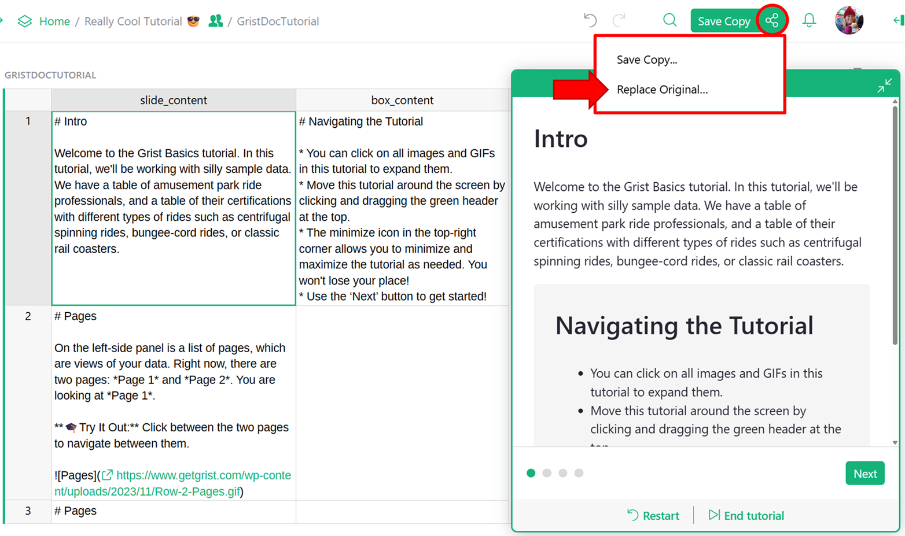
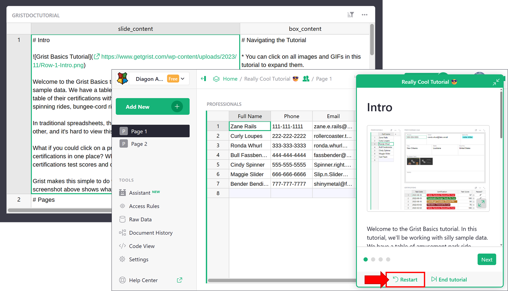

Warning
We’re just getting started translating this language, sorry!
We show partially translated languages to track progress.
This page isn’t translated yet. But the good news is that you can join the translation community to help us 👋.
Creating document tutorials in Grist#
Document tutorials let you build step-by-step guides inside your Grist document, helping users learn by doing. For example, the Grist Basics Tutorial shows new users how to create references, link widgets and more!

Unlike document tours, which give users a quick orientation, tutorials are instruction-driven and interactive. When someone opens a tutorial, Grist automatically creates a private fork of the document—unique to that user. This allows them to follow along, make edits, and explore freely without affecting the original.
You can convert any Grist document to become a tutorial by setting the document type to ‘Tutorial’ under Document Settings. Then, add a specially configured table named GristDocTutorial. These steps are covered in detail below.
How to create a document tutorial#
Adding the GristDocTutorial table#
Create a new table in your document by clicking the green ‘Add New’ button then ‘Add Empty Table’. Name the new table GristDocTutorial.

Add the following columns to the GristDocTutorial table:
- slide_content: A text column that holds the Markdown content for each slide. You can embed images, videos, and links hosted externally.
- box_content: An optional text column that supports additional Markdown. If filled in, this content appears in a shaded box below the slide, useful for tips or extra context.

Setting document type to ‘Tutorial’#
Under Document Settings, update ‘Template mode’ to ‘Tutorial’.

After updating, your page will refresh and your document will open as a fork of the original. Meaning, any changes you make won’t be saved to the original. As document owner, you can easily override the original document by clicking the Share icon () then ‘Replace Original…’.

Original vs forked document: understanding the URLs#
When working with document tutorials, there are three types of URLs you’ll encounter. Each serves a different purpose depending on whether you’re editing the original document or accessing a user-specific fork.
- Direct URL: This is the main link to your document. Because the document is marked as a tutorial, visiting this URL automatically redirects users to their own fork. The format is
https://<teamsite>.getgrist.com/doc/<docID>. - Default Mode: This link opens the original version of the document, letting the owner edit the tutorial directly, useful for updating tutorial content. To access default mode, append the Direct URL with
/m/default. The format ishttps://<teamsite>.getgrist.com/doc/<docID>/m/default. - Fork URL: This is a user’s unique copy of the tutorial, automatically created when they open the Direct URL for the first time. Changes made here won’t affect the original. The format is
https://<teamsite>.getgrist.com/doc/<docID>~<forkID>~<userID>
Example
If your forked tutorial URL is:
https://docs.getgrist.com/doc/woXtXUBmiN5T~1eYN9joCXkuVokCD1p3EYt~12345
Then:
- The Direct URL is:
https://docs.getgrist.com/doc/woXtXUBmiN5T
- The Default Mode URL is:
https://docs.getgrist.com/doc/woXtXUBmiN5T/m/default
If you close out of your fork of the document, you can always return to it by visiting the Direct URL — Grist will redirect you to your fork automatically.
Why is the GristDocTutorial visible?
The GristDocTutorial table is visible to you, the document owner, by default. It is automatically hidden from all other users when they view the tutorial.
Reviewing your document tutorial#
While building your document tutorial, it’s helpful to preview the slides and make edits quickly. There are two ways to do this.
Option 1: Review and edit in the same window
You can edit your fork and push changes back to the original document without opening a second window:
- If you’re in default mode, remove
/m/defaultfrom the URL to return to your fork of the document. - Make any edits (e.g., update steps in the
GristDocTutorialtable). Any changes will be visible instantly in the tutorial popup. - Click the Share icon () and choose ‘Replace original…’ to save your changes to the main document.

⚠️ Don’t lose your work!
Clicking ‘Restart’ at the bottom of the tutorial popup will refresh the page, causing any unsaved changes to be lost. Be sure to save changes to the main document prior to clicking this.
Option 2: Work in two windows
This approach prevents accidental loss of changes:
- Open two browser windows.
- In one window, open the document in default mode (to edit the original).
- In the second window, open your fork by removing
/m/defaultfrom the URL of the first window. - After making any changes, be sure to click ‘Restart’ at the bottom of the tutorial popup to see updates.

Sharing your document tutorial#
To share your document tutorial, simply share your document. The document tutorial will start automatically when a user accesses the document. Because the fork is user-specific, their progress will be saved so they can close it and come back to it at another time. Unsaved forks are automatically deleted after 30 days if not accessed again. Only users with access to the original document can access the document tutorial. Learn more about sharing a document.